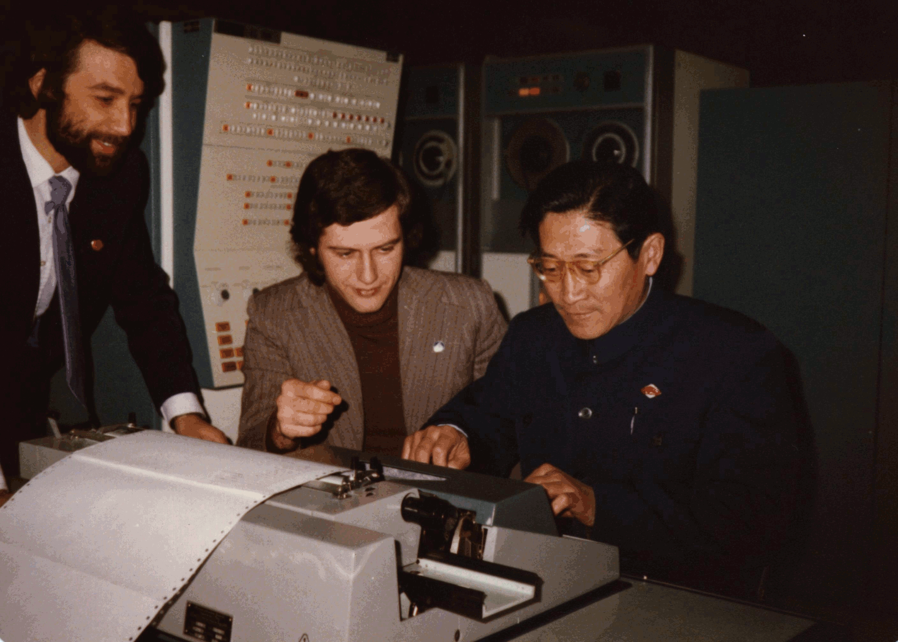
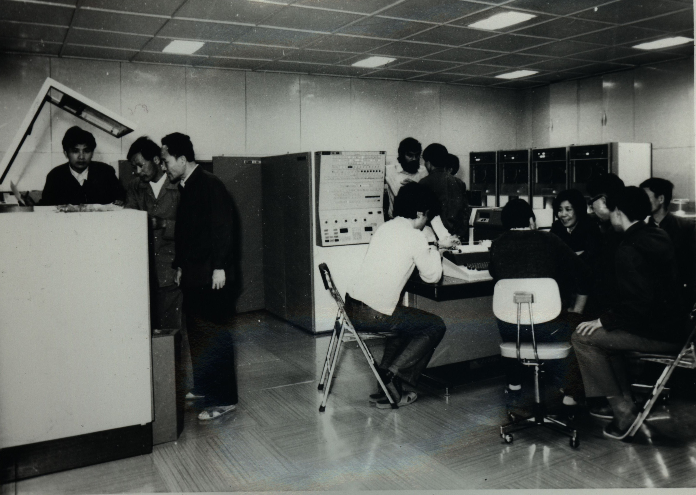

ЕС-1022

ЕС-1022 в Китай - 1981 г.
- 1. Eлектронна изчислителна машина ЕС-1022.(други подобни модели ЕС-1010М, ЕС-1011, ЕС-1012, ЕС-1032, ЕС-1033, ЕС-1052)
- 2. Главен конструктор: Ростовцев И. К.; основни конструктори: Кривонос М. И., Шершень В. П., Чалайдюк, М. Ф., Коротченя М. И., Смирнов Г. Д., Ленкова В. М., Качков В. П.
- 3. Организация–разработчик: СКБ на завод за ЕИМ "Г. К. Орджоникидзе"; НИИЕИМ, Минск. Ведомство: Министерство на радиопромишлеността на СССР. Заводи-производители: Мински завод ЕИМ "Г. К. Орджоникидзе" МРП СССР; Брестски електромеханически завод МРП СССР; ЗИТ, България, София.
- 4. Година на завършване на разработката: 1975.
- Година на начално производство: 1975.
- Година за прекратяване на производството: 1982.
- Области за приложение: ЕИМ ЕС-1022 е усъвършенстван модел на ЕС-1020 получила широко разпространение. Използвала се за решения на научно-технически, икономически, информационно-логически задачи в режим на пакетна обработка с разделяне на времето между потребителите, в режим телеобработка и отдалечен достъп по телефонните и телеграфни канали за връзка.
- Брой произведени машини: от всички производители са произведени общо 3828 машини. Това е най-масово разпространената ЕИМ в страните от Социалистическия лагер.
- Структура на ЕИМ.
- Архитектура ЕС ЕИМ-сeрия 1: набор команди - 144 команди стандартен набор команди на ЕС ЕИМ-серия 1, ширина на обработка - 16 двоични разряда, ширина на думата на ОЗУ - 32 разряда. Обем на оперативната памет - ОЗУ на феритни сърцевини - 128-512 Кб. Средства за пряко управление за създаване на двумашинни комплекси. Универсален интерфейс за връзка с външни устройства. Два селекторни канала. Дискова подсистема на сменни магнитни дискове с обем 29 Мб.(контролер и до 8 бр. дискови устройства) Лентова подсистема на магнитни ленти с плътност на записа 64 импулса на 1 мм. Елементна база: интегрални микросхеми серия 155 ("Логика-2").
- Расширена номенклатура, включваща микросхеми със средна степен на интеграция.
- Конструкция: три стандартни шкафа ЕС ЕИМ-1, шкаф процесор, шкаф захранване, шкаф феритно ОЗУ. В шкафовете по две отварящи се рами с по два панела всяка. Размери на шкафа: 1200х750х1600 мм. Типови елементи за замяна (ТЕЗ) с размери 140х150 мм (стандартни ТЕЗ-ове ЕС ЕИМ) Въздушно охлаждане с помоща на стандартни вентилатори ЕС ЕИМ. Захранване от набора стандартни блокове за захранване ЕС ЕИМ.
- Технология: двустранни печатни платки ТЕЗ-ове, се изготвят по метода на пълна метализация на отворите. Монтажа на панелите се прави по метода на завиване. Механизирана подготовка и монтаж на елементите върху ТЕЗ-вете. Общо запояване на ТЕЗ-овете на спойка вълна. Полуавтоматичен монтаж на панелите и автоматизиран контрол на монтажа на рамите и шкафовете. Създадено е стендового оборудване, позволяващо да се механизират операциите по монтаж и контрол. По нататъшно развитие по механизация и автоматизация на производството на ТЕЗ-ве. Конструирани са и са изготвени стендове и контролно-измерителни прибори, на първо място за ТЕЗ памет. В резултат трудоемкостта за изготвяне на ТЕЗ става минимална в отрасъла. Усъвършенствани са формообразущите методи за механична обработка.
- Програмно осигуряване: с машината се доставя дискова операционна система (ДОС-2.1), включваща в себе си освен управляващи програми, поддържащи едновременна обработка на три работни програми, транслатори на Асемблер, РПГ, Фортран-4, Кобол, ПЛ-1, а също системни обслужващи програми и комплект програми за техническо обслужване. Обеспечена е също и работа с операционна система ОС 4.1.
- Технически характеристики: производителност - 80 хил. операции в секунда по смес Гибсон-3. Заемана площ на основен комплект - 108 кв. метра. Работна температура на въздуха - 5-40оС. Мощност, употрбявана от основния комплект, 25 кW.
- Особенности на ЕИМ. ЕС-1022: напълно съхранява конструктивна и технологическа приемственост с ЕИМ ЕС 1020 и има редица преимущества: бързодействието е увеличено в 6 пъти; расширен е обема на оперативната памет; исползвана е расширена номенклатура от микросхеми серия 155 ("Логика-2").
